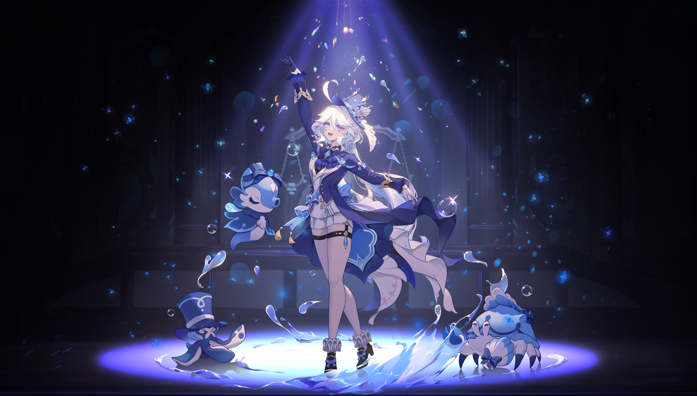

Furina
Furina es el mejor personaje suport del juego con sus estadidisticas y con su set se vuelve el segundo mejor personaje Hydro del juego.
Mejor equipo:
- Kaedhara Kazuha (Apoyo)

Clic en la imagen.
- Xilonen (Apoyo)
Clic en la imagen.
- Neuvillette (DPS)

Clic en la imagen.
Guia de Furina